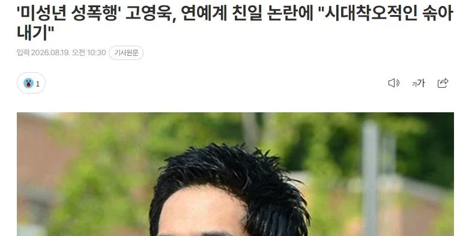

 '미성년 성폭행' 고영욱, 연예계 친일 논란에 "시대착오적인 솎아내기" 기사를 덧붙인 그는 "쓰레기 치우는 국민성이나마 일본한테 좀 배워라 제발"이라며 대중을 향한 비난을 이어갔다.
댓글
수집 당시 댓글 9개
조옷 · 2 일 전
???: 지원군들이 뭔가 이상하다.
더블그라탕버거 · 2 일 전
지원군이라고 모이는것들이 다 안모이니만 못한...
아이스픽 · 1 일 전
4대를 묵혀 온 똥이라 그런지 온갖 똥파리가 다 꼬이네
死4死4 · 1 일 전
지원군이 어떻게 윤서인 고영욱 ㅋㅋㅋㅋㅋㅋㅋㅋㅋㅋㅋㅋㅋㅋㅋㅋ
번딸치고난뒤 · 1 일 전
든든
룽니 · 1 일 전
망했네
아주좋아요 · 1 일 전
하영이 30살 넘었다 관심꺼라
그려그럼그램 · 1 일 전
수어사이드스쿼드 맞지?
XiJinPink · 1 일 전
촤~~~~